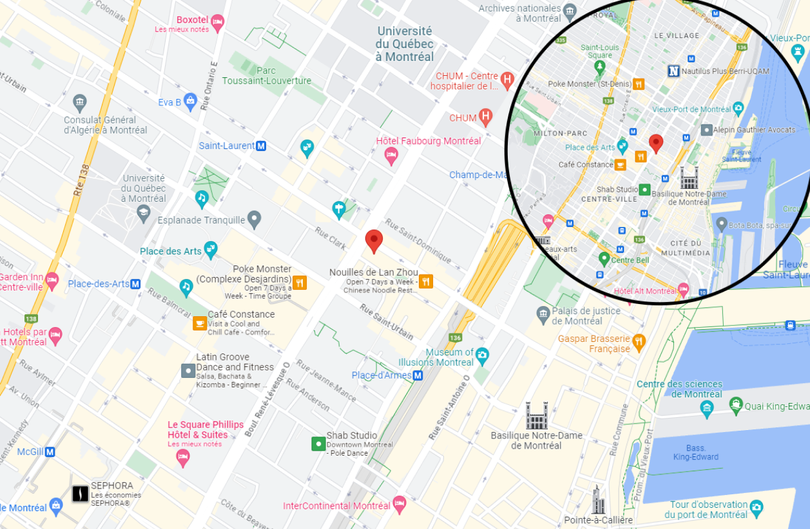

Situé en plein coeur du quartier chinois de Montréal, Yayushe est un des nombreux restaurants qui se démarquent du quartier.
En planifiant une sortie dans le vieux-port de Montréal lors d’une belle journée ensoleillée,
ou encore d’une session de magasinage au centre ville, Yayushe est la place parfaite pour y venir faire une petite pause pour y manger un bon repas digne des traditions japonaises!

Vidéo YouTube d’un point de vue de drone du restaurant.